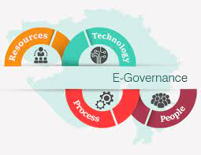

Due Date: Week 14 [09/06/2023] lab session.
(To be discussed and confirmed with your TA)
Team name:
0601 - E-Government
Team Coordinator/Leader: Campbell Boulton
This is the first stage of your team work project. where you propose the chosen technology/topic which you will investigate. This will then be approved or reviewed.
| Chosen Technology/Topic | Name |
|---|---|
| E-Government | Government on Social Media |
Note: the preferred option will be to fill in this cell in your site with hard coded' updated details in this form in the row, and email the link to your TA when completed. Please think of this site as a work in progress.
Please briefly describe your topic, its relevance and importance and why you have chosen it.
| Topic Description | Description and why it is important |
|---|---|
| E-Government | We chose this topic because most of the people used social media as well as the government started to adapt the use of social media. Also social media and technology became a big part of everyone's life so the government has seen an advantage of using it. |
Note: the preferred option will be to fill in this cell in your site with 'hard coded' updated details in this form in the row, and email the link to your TA when completed. Please think ofthis site as a work in progress.
Please confirm your team members details (they may have changed since 23/04)
| Confirmed Team Member Details | Last Name | First Name | Student ID |
|---|---|---|---|
| Team Member 1 | Boulton | Campbell | 22172737 |
| Team Member 2 | Afable | Kylie | 19083894 |
| Team Member 3 | Barrion | Axel Xavier | 22185850 |
Note: the preferred oplion will be lo fill in the cells in your sile with 'hard coded' details in this form in a row, and email the link to your TA when completed.
Please outline your team members roles and responsibilities for activities they will undertake (up to four each are allowed for, but fewer is fine too)
| Team Member Roles | Roles/Activity Name | Roles/Activity Name | Roles/Activity Name |
|---|---|---|---|
| Team Member 1 | Leader | Researcher | Writter |
| Team Member 2 | Researcher | Writter | |
| Team Member 3 | Researcher | Writter | Website |
Note: the preferred option will be to fill in the cells in your site with'hard coded' details in this form or equivalent in a row, and email the link to your TA when completed.
| Portfolio Element | Portfolio | Communication Plan | Artefact Management Plan | Meeting Minutes |
|---|---|---|---|---|
| Repository and Templates Set up | Yes/No | Yes/No | Yes/No | Yes/No |
Link to your Team Repository:
Portfolio Repository Team [0601 - E-Government] Link
When it comes to free speech, politics and governments we see a lot of governments moving their presence online with government websites and access to plenty of information.
Technology advancements are causing dramatic changes in politics and government. E-Governments use social media as an advantage to improve communications and wider reach as well as the enhancement of transparency to the people.
As a result, the Government has recognised the power and importance of social media.Through the internet and social media, the Government is able to provide services and information internationally, reaching a large target audience. This enables the Government to receive feedback from different people who express their opinions. (A.Mishaal & Abu-Shana, 2015)
One of the main reasons we chose to do our assignment on Governments on social media is how social media allows the government to engage with the public and how the public would react to certain new laws, or the government's thoughts. Another main reason is how governments use their social media presence in crisis situations to warn and inform people, for example during the COVID-19 pandemic many governments across the world used social media to inform people about lockdowns and COVID-19 statistics.
Note: you can replace the Teams Link to Comp501 with a 'hard coded' link to your repository in this form or equivalent.
TA name:..............................., Date Proposal Approved:.../..../......,
Made 1 June 2003